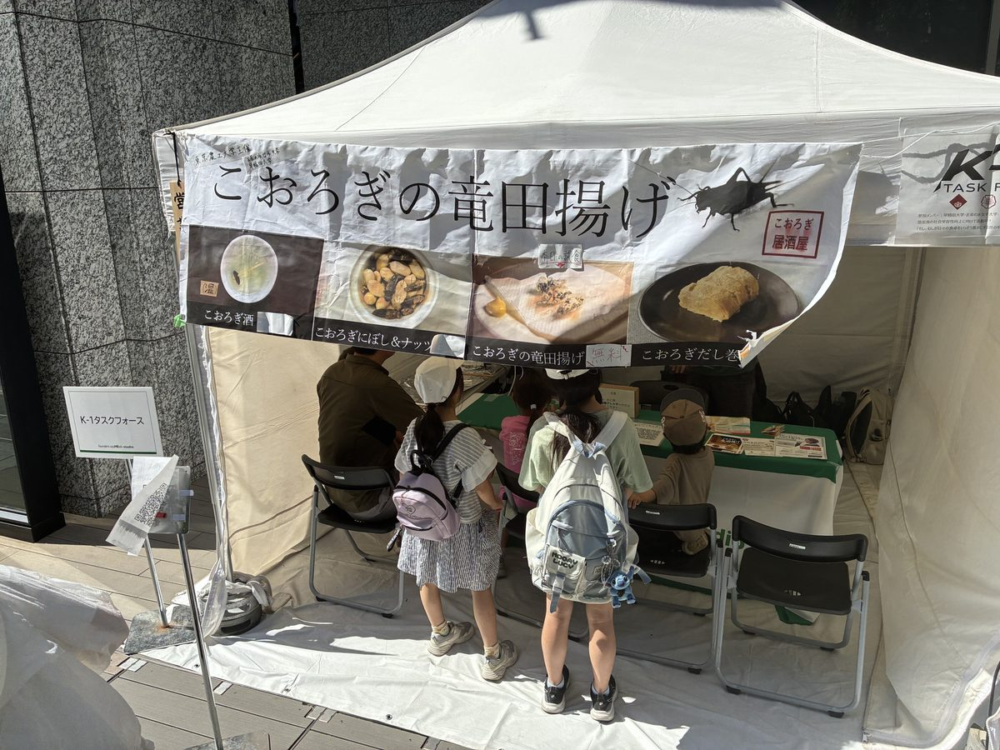
品川シーズンテラス イベント出展
品川シーズンテラス
品川シーズンテラスにて開催されたイベントに出展いたしました。大都会のビジネス街という新たな環境で、看板メニューである「こおろぎの竜田揚げ」の無料試食会を実施。さらに今夏に予定している農工大府中キャンパスの「虫小屋見学ツアー」の案内を行いました。学園祭で培った呼び込みや対話のノウハウを存分に発揮し、多くの皆様に昆虫食の魅力を伝えるとともに、チームの成長を実感する貴重な挑戦の機会となりました。
イベント出展、講演、受賞など、これまでの歩みを紹介します。

品川シーズンテラス
品川シーズンテラスにて開催されたイベントに出展いたしました。大都会のビジネス街という新たな環境で、看板メニューである「こおろぎの竜田揚げ」の無料試食会を実施。さらに今夏に予定している農工大府中キャンパスの「虫小屋見学ツアー」の案内を行いました。学園祭で培った呼び込みや対話のノウハウを存分に発揮し、多くの皆様に昆虫食の魅力を伝えるとともに、チームの成長を実感する貴重な挑戦の機会となりました。
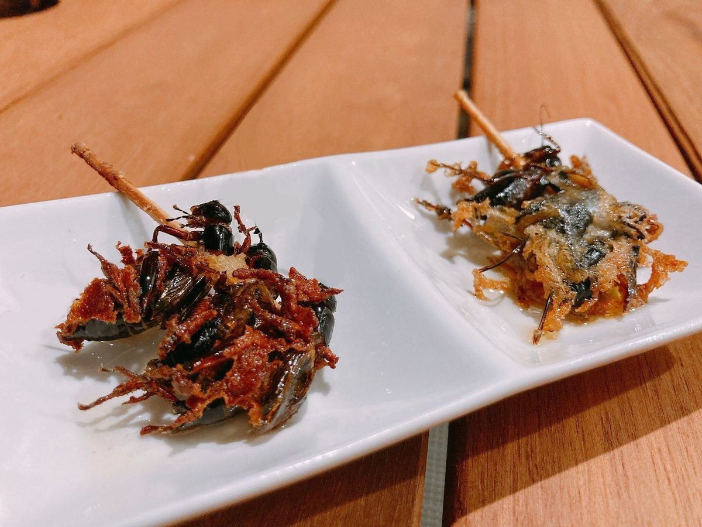
東京農工大学工学部（小金井キャンパス）
東京農工大学工学部の学園祭「皐槻祭」にて、毎年大好評の「こおろぎ竜田揚げ」を出展・調理販売いたしました。わずか1日のみの開催でしたが、500本以上の提供を達成。多くの来場者の皆様にコオロギ食の美味しさと魅力を直接届ける、貴重な社会実装の機会となりました。
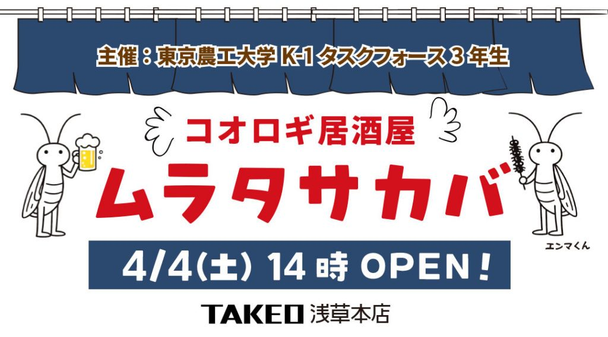
TAKEO浅草本店（東京都台東区西浅草1-3-14 2F）
TAKEO浅草本店で開催された昆虫酒場イベント「ムラタサカバ」に、東京農工大学の村田氏とともにK-1タスクフォースとして参加。大学で養殖されたタイワンエンマコオロギの竜田揚げの実演販売や、コオロギ養殖研究・現場のリアルを語るトークショーを実施し、お酒と昆虫食を囲んだ熱気あふれる交流を行いました。
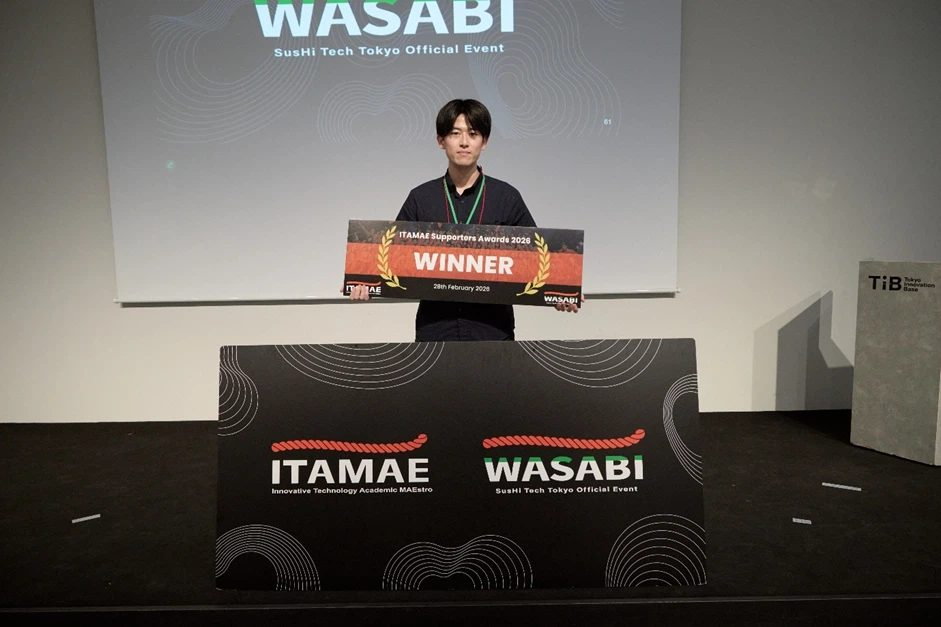
Tokyo Innovation Base（TIB）
学生・若手社会人向けピッチイベント「WASABI #2」に出場し、唯一無二賞と最優秀賞のダブル受賞を達成しました。
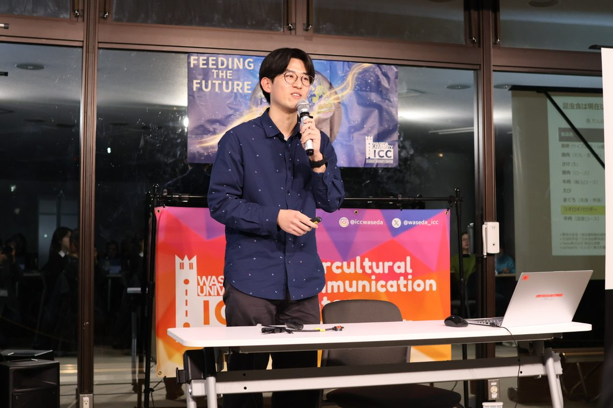
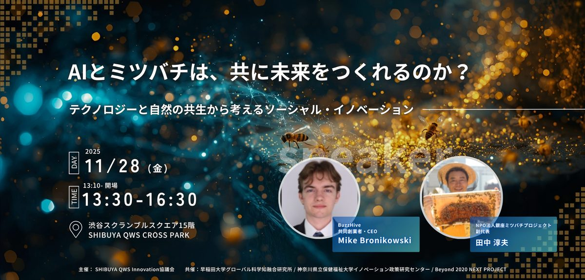
CROSS PARK (SHIBUYA QWS内)
ニューヨーク州立大学のJoey Tsai准教授やBuzzHiveのMike Bronikowski CEOを招いたワークショップ。AI巣箱や都市養蜂を通じたソーシャル・イノベーションについて議論しました。
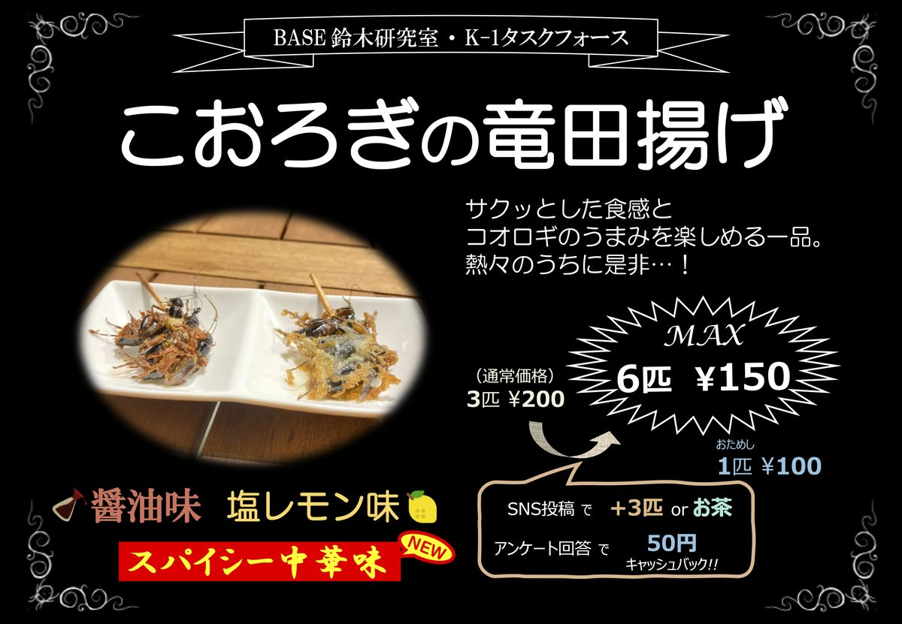
東京農工大学 府中キャンパス
鈴木丈詞研究室と共同出店。3日間で約2,000本を完売する大盛況となりました。醤油・塩レモン・スパイシー中華の3種を提供し、貴重な社会実装の機会となりました。
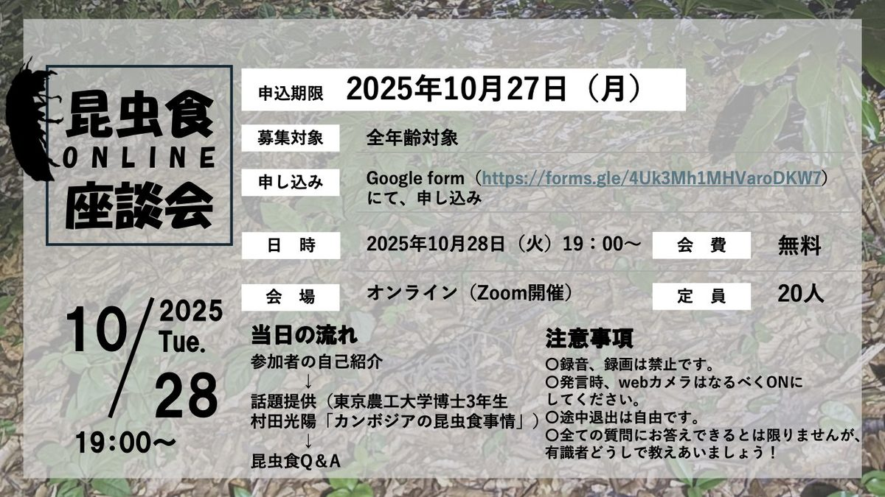
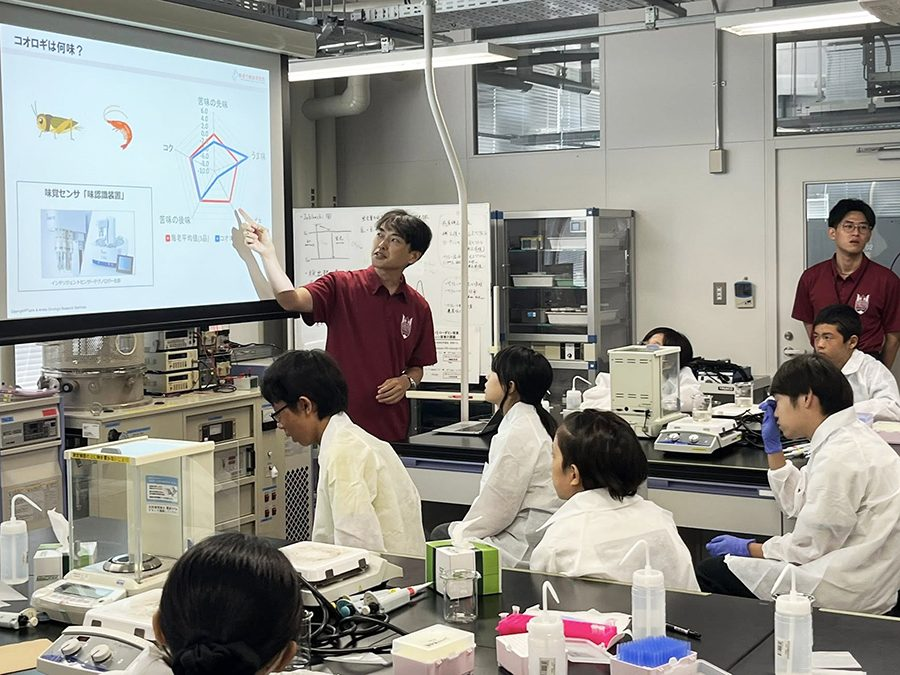
早稲田大学 西早稲田キャンパス
タンパク質量の測定実験を行い、科学的データで昆虫食を検証。次世代の探究心を育む教育活動となりました。
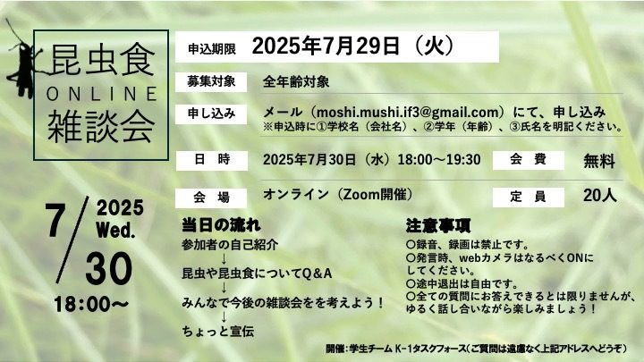
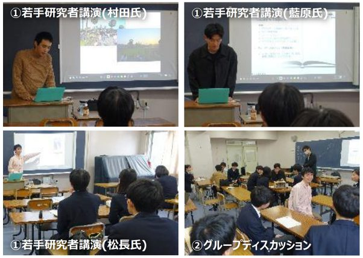
東京農工大学 府中キャンパス
実食を通じた社会受容性の研究アンケートを実施。「美味しい」という体験が食の障壁を越える可能性を実感しました。
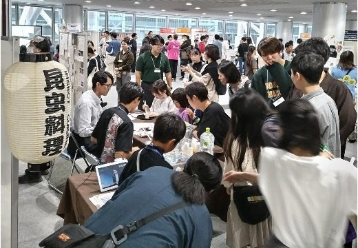
テレコムセンター（お台場）
食用昆虫科学研究会と共同出展。「美味しいから食べる」という原点を大切にした、理想的な対話が生まれました。
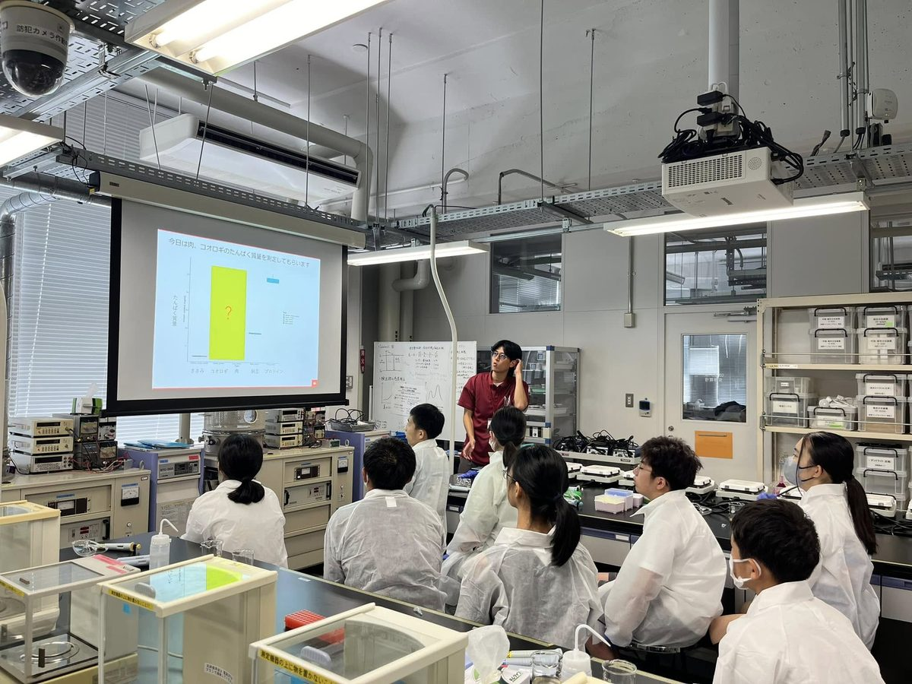
新たなリーダーシップのもと、社会実装に向けた活動を加速させていきます。